Мойки
Вода - непременная составная часть всего живого. В теле здорового человека содержится 80% воды. Потеря более 10 % воды приводит к гибели человека, а при утрате всего 2% в организме начинаются серьезные биохимические нарушения, приводящие к нарушению постоянства внутренней среды.
ВОДА… Это, пожалуй, самое распространенное и необходимое вещество на нашей Планете. Она является основной субстанцией абсолютно всех живых организмов, средой, в которой протекают все жизненные процессы. Без воды невозможно существование всего живого на Земле. Человеческий организм является открытой системой, которая постоянно взаимодействует с окружающей средой, параметры которой существенно влияют на жизнедеятельность и здоровье человека. Безусловно, важнейшим параметром окружающей среды является:
ВЛАЖНОСТЬ ВОЗДУХА или насыщенность водяными парами (относительная влажность). За последние десятилетия Человечество столкнулось с большой проблемой климатической нестабильности (как следствие научно-технического прогресса), что привело к падению относительной влажности в городах (особенно больших). В естественных природных условиях оптимальная относительная влажность обеспечивается наличием зелёного покрова и водоёмов (леса, луга, поля, болота, реки, озёра).
Городская территория (особенно жилые и прочие помещения) представляет собой АНТРОПОГЕННУЮ ЗОНУ, т.е. территорию, созданную человеком под влиянием научно-технического прогресса.
Проблема падения относительной влажности в крупных городах объясняется особенностями городских построек:
- Большинство стройматериалов, из которых сконструированы наши дома, и предметы нашего ежедневного быта являются сильными адсорбентами водяных паров из окружающей среды.
- Во время отопительного сезона эти адсорбенты работают гораздо эффектнее (порой в отопительный сезон относительная влажность в помещениях не превышает 20%).
- При работе бытовой техники (особенно обогревателей и кондиционеров) создаётся «сухой воздух», т.к. работа этой техники, к которой мы привыкли и которую мы полюбили, утилизирует из окружающего воздуха водяные пары. Многие из нас не знают, а некоторые даже не задумываются - какая влажность в помещении. Влажность, при которой человек чувствует себя наиболее комфортно летом - это 50-65%, зимой это 50-60%.
В наших домах весной и летом (в сухую погоду) влажность не превышает 40%, а осенью и зимой, в отопительный период, она падает до 15-25%, при этом страдают люди, особенно, дети. Особенно важен влажностный режим для маленьких и грудных детей. В первые дни и месяцы жизни у грудничков очень нежная и чувствительная слизистая оболочка полости рта и носа. Поэтому влажность в комнате, где спит новорожденный, должна быть не ниже 55%. Около 9 месяцев ребенок находится в утробе матери во влажной среде. Низкая влажность воздуха губительна для кожи новорожденного.
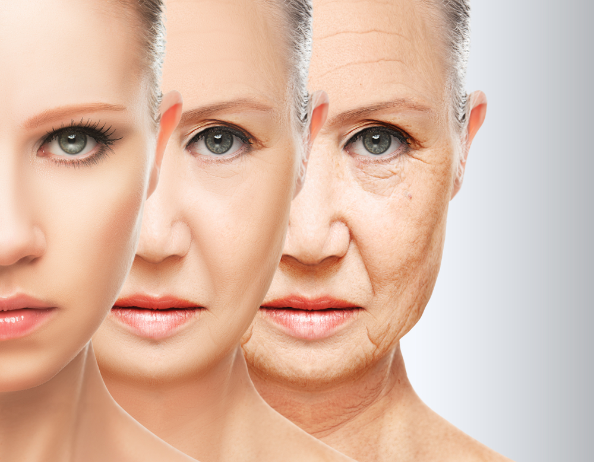При низкой влажности ускоряется процесс старения кожи, она теряет свою упругость и эластичность, что приводит к возникновению заболеваний кожи (например, дерматитов) и влияет на обмен веществ целого организма, а нам так хочется продлить свою молодость!
Почему зимой сухая кожа? В холодном зимнем воздухе, попросту очень мало влаги (низкая абсолютная влажность), сухой воздух, подобно губке, ищет и впитывает влагу везде, где бы она ни встретилась. Наша кожа не исключение. А в результате при низкой влажности люди не только хуже выглядят, но и испытывают заметный дискомфорт.
Сухой воздух и глаза. Люди, носящие контактные линзы, в условиях сухого воздуха часто жалуются на раздражение слизистой оболочки глаз. Даже те, кто не имеет проблем со зрением, могут испытывать неблагоприятное воздействие сухого воздуха на глаза. Это так называемый синдром "сухого глаза". Им страдают до 12% больных, обращающихся к офтальмологам в возрасте до 40 лет, и свыше 65% пациентов старше 50 лет.
Следствием сухого воздуха является подверженность организма простудным инфекциям и аллергиям. Сухой воздух раздражает и высушивает слизистые оболочки носа, что вызывает кровотечения. Сухой воздух приводит к ослаблению иммунной системы в целом. Холодный сухой воздух препятствует попаданию кислорода в систему кровообращения. Симптомы недостаточного потребления кислорода - истощение, плохая концентрация внимания, усталость. При 10-25% влажности воздух сухой, как в пустыне. Это - реальные условия комнаты в зимнее время, когда используется центральное отопление. Совсем немного растений могут перенести подобные испытания.
СРЕДНЯЯ ОТНОСИТЕЛЬНАЯ ВЛАЖНОСТЬ ВОЗДУХА НА УЛИЦЕ И В КВАРТИРЕ (ПО ДАННЫМ ГИДРОМЕТЦЕНТРА РФ).
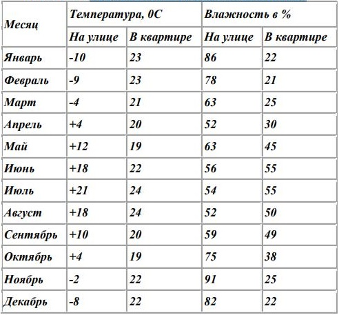Необходимая и достаточная влажность
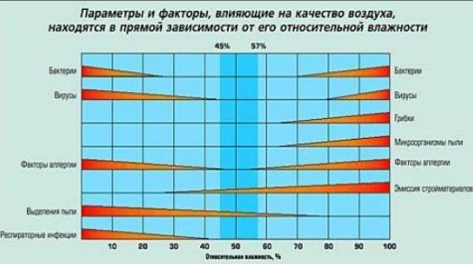Чтобы понять, почему в отапливаемых помещениях в зимнее время происходит такое существенное снижение влажности воздуха, обратимся к курсу физики. Известно, что влажность воздуха в значительной степени зависит от его температуры: чем сильнее прогревается воздух, тем большее количество влаги он может содержать. Количество содержащейся в воздухе влаги характеризуется двумя величинами — относительной и абсолютной влажностью.
Относительная влажность воздуха представляет собой отношение содержащейся в воздухе влаги на данный момент к максимальному количеству влаги, которое вообще может в нем содержаться при данной температуре; иными словами, относительная влажность показывает, насколько воздух далек от насыщения водяным паром. Поэтому, например, над водной гладью океана или моря относительная влажность воздуха довольно высокая (более 80%); а в жарких пустынных местностях — очень низкая (менее 10%).
Абсолютная влажность просто определяет количество (в граммах) водяного пара, содержащегося в одном кубометре воздуха. Зная только этот параметр, нельзя определить, насколько воздух влажен или сух, поскольку в зависимости от температуры при одной и той же абсолютной влажности воздух может быть и сухим, и влажным. Чем выше температура, тем большее количество влаги может в нем содержаться. Предельное количество водяных паров, насыщающих воздух при данной температуре, называют максимальной влажностью — далее влага выпадает из воздуха в виде осадков. Относительная влажность очень высока в экваториальной зоне (среднегодовая до 85% и более), а также в полярных широтах и зимой внутри материков средних широт.
Интенсивность испарения влаги зависит от относительной влажности воздуха. Поэтому, например, зимой при нормальной относительной влажности абсолютная влажность может быть достаточно низкой, поскольку холодный воздух не может содержать большое количество водяного пара. При проветривании теплого помещения холодный воздух с низким содержанием влаги попадает внутрь и нагревается. При этом количество водяного пара в воздухе — абсолютная влажность — не изменяется, а относительная — уменьшается (ведь в теплом воздухе могло бы содержаться значительно больше водяного пара, чем в холодном). Поэтому-то зимой в отапливаемых помещениях влажность воздуха опускается вдвое и даже втрое ниже установленной нормы. Для предотвращения этих негативных явлений можно воспользоваться приборами, которые так и называются — бытовые увлажнители воздуха.
Типы увлажнителей воздуха
Существует несколько типов увлажнителей воздуха: холодные (традиционные), паровые, ультразвуковые увлажнители, а также увлажнители-очистители – это приборы, в которых функция увлажнения сочетается с очисткой воздуха.
Паровые увлажнители

Работу парового увлажнителя можно сравнить с функционированием обычного чайника, поскольку здесь жидкость также доводится до кипения. Паровой увлажнитель имеет устойчивое основание, ручку для перемещения и отверстие для выхода пара. Для работы парового увлажнителя может использоваться обычная водопроводная или минеральная вода. Система нагревания воды как правило состоит из двух металлических стержней, погруженных в воду. Через воду от одного электрода к другому проходит электрический ток, в результате чего вода нагревается до температуры кипения (при 100 °С) и выходит в виде пара. Когда влага улетучивается, электрическая цепь естественным образом размыкается и нагрев прекращается. Пар на выходе всегда абсолютно чист, поскольку все соли остаются в резервуаре; однако именно по этой причине необходимо регулярно тщательно промывать емкость, в идеале — перед каждым использованием. Кроме того, необходимо периодически (1-2 раза в месяц, в зависимости от жесткости воды) удалять известковый налет с элементов насадки. Паровые увлажнители, как правило, имеют достаточно большую потребляемую мощность (300-600 Вт) по сравнению с увлажнителями другого типа. Паровые увлажнители могут снабжаются датчиком влажности воздуха, который отключает прибор при достижении нужной степени влажности. Если паровой увлажнитель не оборудуется встроенной системой регулирования влажности, а такие приборы чаще и встречаются, то можно укомплектовать прибор отдельным выносным гигростатом, который отключит испаритель сразу после того, как в помещении уровень влажности достигнет нужной отметки. При понижении влажности гигростат вновь включит устройство. Без использования гигростата пароувлажнители используются, например, в теплице, где приемлема относительная влажность воздуха до 90-100%. Особенно внимательно следует отнестись к моделям простых конструкций, которые не оборудованы вентилятором и увлажняют воздух только на небольшом расстоянии вокруг прибора. Такие увлажнители, в частности, не рекомендуется устанавливать ближе 15 см от оклеенной обоями стены, чтобы обои не отклеились. Струя пара, подаваемая прибором, представляет собой определенную опасность и может обжечь уже на расстоянии примерно 10 см. от паровыпускного отверстия. По этой причине паровой увлажнитель нельзя использовать в детских, а также оставлять детей без присмотра в помещении, где работает этот прибор. Кроме того, в некоторых случаях дискомфорт может вызывать тихий, но отчетливый шум кипящей воды в работающем приборе.
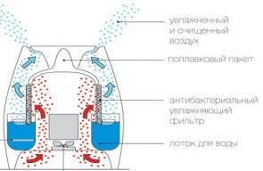 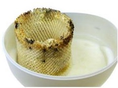Мойки воздуха
Очистка воздуха в них происходит примерно так же, как в природе во время дождя, а увлажнение — по принципу холодного испарения. Воздух увлажняется вращающимися пластиковыми дисками, которые с небольшими зазорами собираются в пакеты (примерно по 20 шт.). Пакеты частично погружены в емкость с водой и приводятся в движение электромотором. Благодаря особой технологии обработки, поверхность дисков всегда остается влажной. Сухой воздух из помещения засасывается вентилятором в корпус увлажнителя, проходит между увлажненными дисками, насыщается влагой, образуя мелкодисперсную водяную пыль, которая оптимально увлажняет воздух и осаждает содержащиеся в нем вредные частицы на поверхности дисков, которые смываются в заполняющую емкость воду.
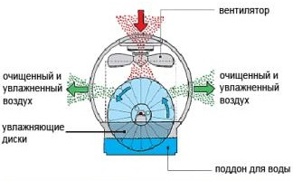 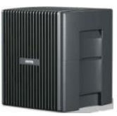BORK НОВЫЕ КОМПЛЕКСЫ ОЧИСТКИ И УВЛАЖНЕНИЯ ВОЗДУХА ОСНАЩЕНЫ СИСТЕМОЙ ECO-AIR, КОТОРАЯ СОСТОИТ ИЗ ТРЕХ КОМПОНЕНТОВ:
-
Комбинированный карбоновый предварительный фильтр. Воздушная масса проходит через фильтр предварительной очистки, который задерживает крупные загрязнители, такие как пыль, тополиный пух, пыльцу, шерсть, волосы и т.п. Карбоновый фильтр на основе скорлупы кокоса способен задерживать аэрозольные частицы, например, табачный дым, формальдегид, аммиак.
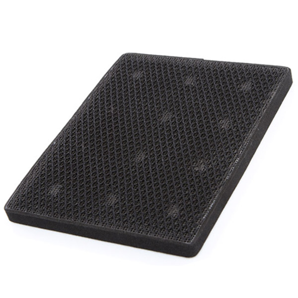 -
Стерилизующий фильтр OMCA. Это катализатор, являющийся сложным компонентом (марганец, медь, железо, кобальт с определенным соотношением), содержащим ионы, наличие которых обеспечивает сильный антибактериальный и стерилизующий эффект.
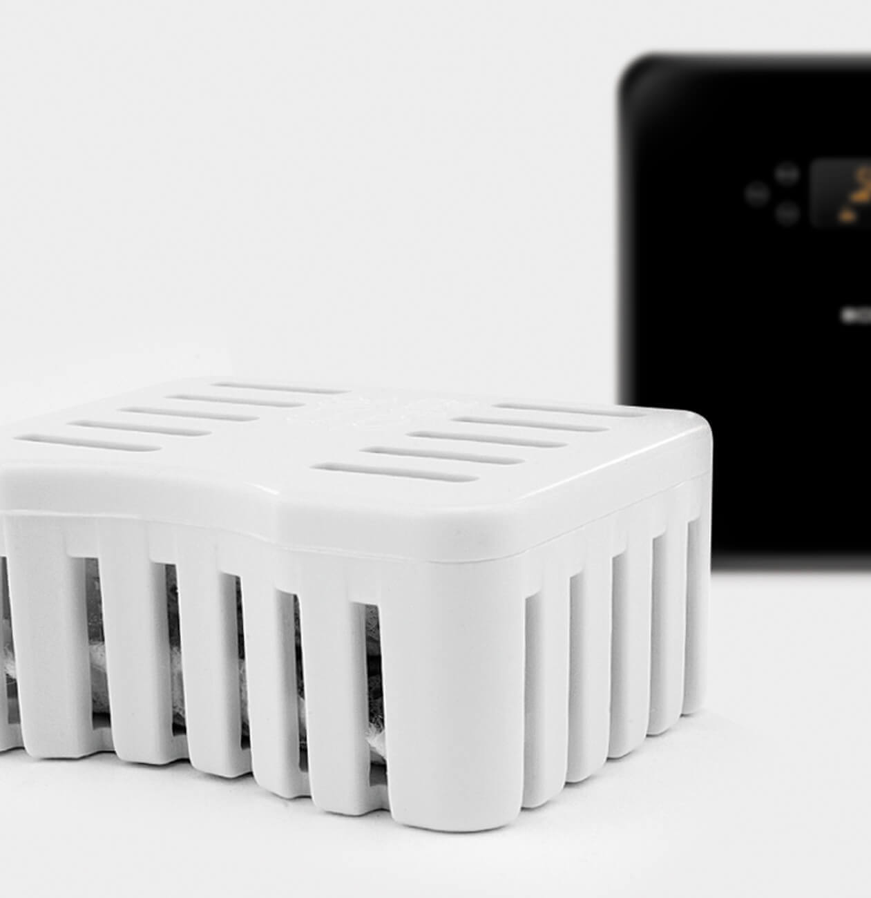 -
Увлажняющие диски OMCA.
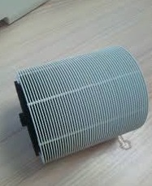Поверхность дисков обеспечивает эффективный подъем воды из резервуара. Благодаря рельефному рисунку на поверхности и обработке впитывающим влагу составом, увеличено поглощение воды диском. Они обработаны антибактериальным составом OMCA, который уничтожает бактерии, грибок, плесень, вирусы и другие загрязнители. Антибактериальным составом OMCA так же обработана внутренняя поверхность поддона для воды.
Преимущества:
Безопасный для человека
Химически стабильный
Не требует дополнительных затрат энергииФильтрация воды. Крышка резервуара для воды оснащена креплением для ионообменного картриджа NANO Silver.
Ионообменный картридж NANO Silver разработан для смягчения жесткой воды. Рекомендованный срок службы 3 месяца, либо 100 заправок водой. Использование данного фильтра позволит реже очищать диски от солей и кальция, находящихся в воде.
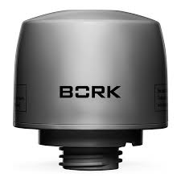
Очистительный комплекс BORK
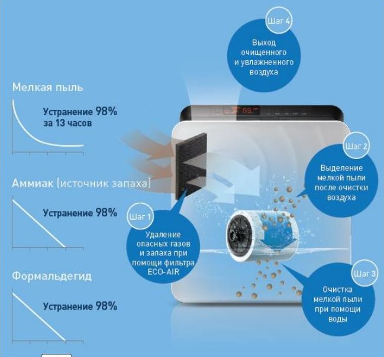Использование ароматических масел
Использование ароматических масел в мойках воздуха Bork, допустимо при условии:
- Клиент согласен «пожертвовать» антибактериальными свойствами увлажняющих дисков.
- Антибактериальный картридж OMCA должен быть извлечен.
- Функция гибридного увлажнения отключена.
Бесшумная турбина BORK
В мойках воздуха BORK установлена современная бесшумная турбина. Минимальный уровень шума 23 дБ!
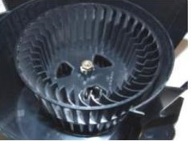Мойка воздуха BORK Q700
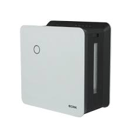Технические характеристики
Напряжение: 220–240 В
Потребляемая мощность: 28 Вт
Частота: 50 Гц
Производительность: 350 мл/ч
Эффективная площадь увлажнения: 35 м2
Эффективная площадь очистки: 25 кв. м2
Емкость резервуара для воды: 4 л, рассчитана на 16 ч непрерывной работы
Совершеные технологии по увлажнению и очистке воздуха
Мойка воздуха BORK Q700 является полностью автоматическим комплексом для одновременной очистки и увлажнения воздуха путем естественного испарения воды. Цифровой гигрометр, четыре автоматические программы и «ручной» режим работы обеспечивают эффективную очистку воздуха и оптимальную влажность в любое время года.
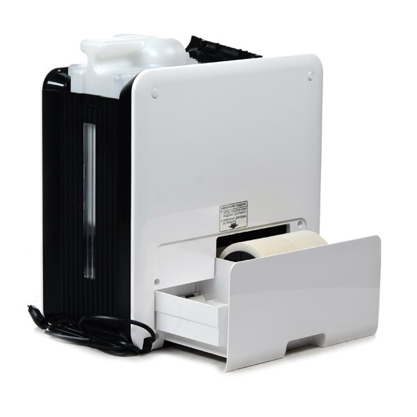Поддержание естественой влажности. Увлажнение воздуха путем естественного испарения воды, с медицинской точки зрения, является самым оптимальным для детей, взрослых и домашних животных. При естественном увлажнении на мебели, бытовой технике и паркете не образуется белый налет кальция.
Очистка воздуха. Мощным природным фильтром для очистки воздуха является вода. Загрязненный воздух проходит через систему влажных дисков, где водой задерживаются все частицы размером до 10 мкр: аллергены, домашняя пыль, альдегиды, табачный дым, пыльца растений и частицы шерсти домашних животных.
Автоматические режимы работы.Встроенный цифровой гигрометр и четыре автоматических режима непрерывно обеспечивают оптимальную работу устройства без необходимости постоянного контроля со стороны человека.
Автоматический режим. Автоматическая работа прибора по поддержанию относительной влажности в помещении 55%.
Ночной режим. Отключается подсветка LCD экрана и включается бесшумный режим работы.
Режим «Детская комната». Прибор автоматически поддерживает в помещении рекомендованную для детей относительную влажность воздуха 50~60%.
Режим «Здоровье». Специальный тонизирующий режим, способствующий укреплению здоровья. Мойка поочередно переключает режимы увлажнения: турбо/сильное/слабое увлажнение для имитации естественного изменения влажности в природе, оказывающей благоприятное воздействие на здоровье человека.
Ручной режим MANUAL — установка желаемой влажности. Диапазон значений — 40-75%, шаг установки — 5%;
СO — непрерывный режим работы.
Примечание. При достижении заданного уровня влажности в помещении мойка воздуха автоматически отключится, при этом на дисплее будут попеременно отображаться значения заданной и текущей влажности. При работе в непрерывном режиме (Сo) в течение 3-х часов, мойка воздуха автоматически переключится на уровень влажности 75%.

Бактерицидные свойства — ситема ECO-AIR Для обеспечения прибору высоких бактерицидных свойств он оснащен системой очистки ECO-AIR. Предварительный фильтр очистки воздуха, внутренняя поверхность прибора и фильтрующие диски обработаны антибактериальным органическим комплексом OMCA (organic metal complex anti-bacteria), обладающим мощными бактерицидными свойствами. Воду в резервуаре стерилизует съемный картридж OMCA .
Информативный дисплей

Индикация отсутствия воды
Empty — низкий уровень воды в резервуаре. После заполнения резервуара для воды необходимо примерно 20 секунд для того, чтобы вода попала на поддон — подождите, пока погаснет индикатор низкого уровня воды.
Мойка воздуха BORK Q710
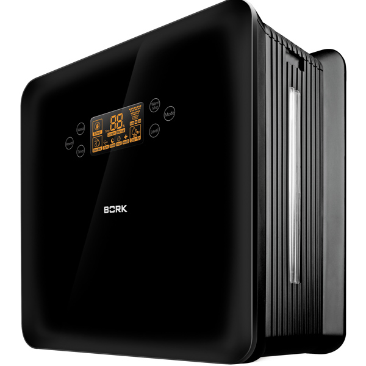Технические характеристики
Напряжение: 220–240 В
Частота: 50 Гц
Потребляемая мощность: 28/344 Вт
Производительность: 400 мл/ч
Эффективная площадь увлажнения: 40 м2
Эффективная площадь очистки: 25 м2
Емкость резервуара для воды: 4 л, рассчитана на 10 ч непрерывной работы
Габариты (ВхШхГ): 380х207х396 мм
Вес: 7 кг
Совершеные технологии по увлажнению и очистке воздуха
Мойка воздуха BORK Q710 является полностью автоматическим комплексом для одновременной очистки и увлажнения воздуха путем естественного испарения воды. Цифровой гигрометр, четыре автоматические программы и «ручной» режим работы обеспечивают эффективную очистку воздуха и оптимальную влажность в любое время года.
Функция теплого увлажнения. Функция теплого увлажнения значительно увеличивает производительность мойки воздуха, что позволяет быстрее достичь заданное значение влажности воздуха в помещении и создает максимально благоприятные условия для людей, растений и домашних животных.
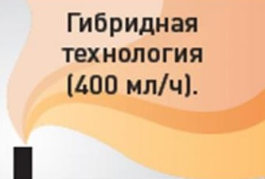Поддержание естественой влажности. Увлажнение воздуха путем естественного испарения воды, с медицинской точки зрения, является самым оптимальным для детей, взрослых и домашних животных. При естественном увлажнении на мебели, бытовой технике и паркете не образуется белый налет кальция.
Очистка воздуха. Мощным природным фильтром для очистки воздуха является вода. Загрязненный воздух проходит через систему влажных дисков, где водой задерживаются все частицы размером до 10 мкр: аллергены, домашняя пыль, альдегиды, табачный дым, пыльца.
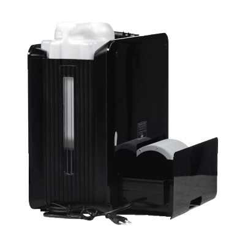Ручной режим MANUAL — установка желаемой влажности. Диапазон значений — 40-75%, шаг установки — 5%
СO — непрерывный режим работы. Примечание. При достижении заданного уровня влажности в помещении мойка воздуха автоматически отключится, при этом на дисплее будут попеременно отображаться значения заданной и текущей влажности. При работе в непрерывном режиме (Сo) в течение 3-х часов, мойка воздуха автоматически переключится на уровень влажности 75%.
Автоматические режимы работы. Встроенный цифровой гигрометр и четыре автоматических режима непрерывно обеспечивают оптимальную работу устройства без необходимости постоянного контроля со стороны человека.
Автоматический режим. Автоматическая работа прибора по поддержанию относительной влажности в помещении 55%.
Ночной режим. Отключается подсветка LCD экрана и включается бесшумный режим работы.
Режим «Детская комната». Прибор автоматически поддерживает в помещении рекомендованную для детей относительную влажность воздуха 50~60%.
Режим «Здоровье». Специальный тонизирующий режим, способствующий укреплению здоровья. Мойка поочередно переключает режимы увлажнения: турбо/сильное/слабое увлажнение для имитации естественного изменения влажности в природе, оказывающей благоприятное воздействие на здоровье человека.
Бактерицидные свойства — система ECO-AIR Для обеспечения прибору высоких бактерицидных свойств он оснащен системой очистки ECO-AIR. Предварительный фильтр очистки воздуха, внутренняя поверхность прибора и фильтрующие диски обработаны антибактериальным органическим комплексом OMCA (organic metal complex antibacteria), обладающим мощными бактерицидными свойствами. Воду в резервуаре стерилизует съемный картридж OMCA.
Информативный дисплей
Сенсорное управление
Индикация отсутствия воды. Empty — низкий уровень воды в резервуаре. После заполнения резервуара для воды необходимо примерно 20 секунд для того, чтобы вода попала на поддон — подождите, пока погаснет индикатор низкого уровня воды.
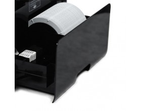